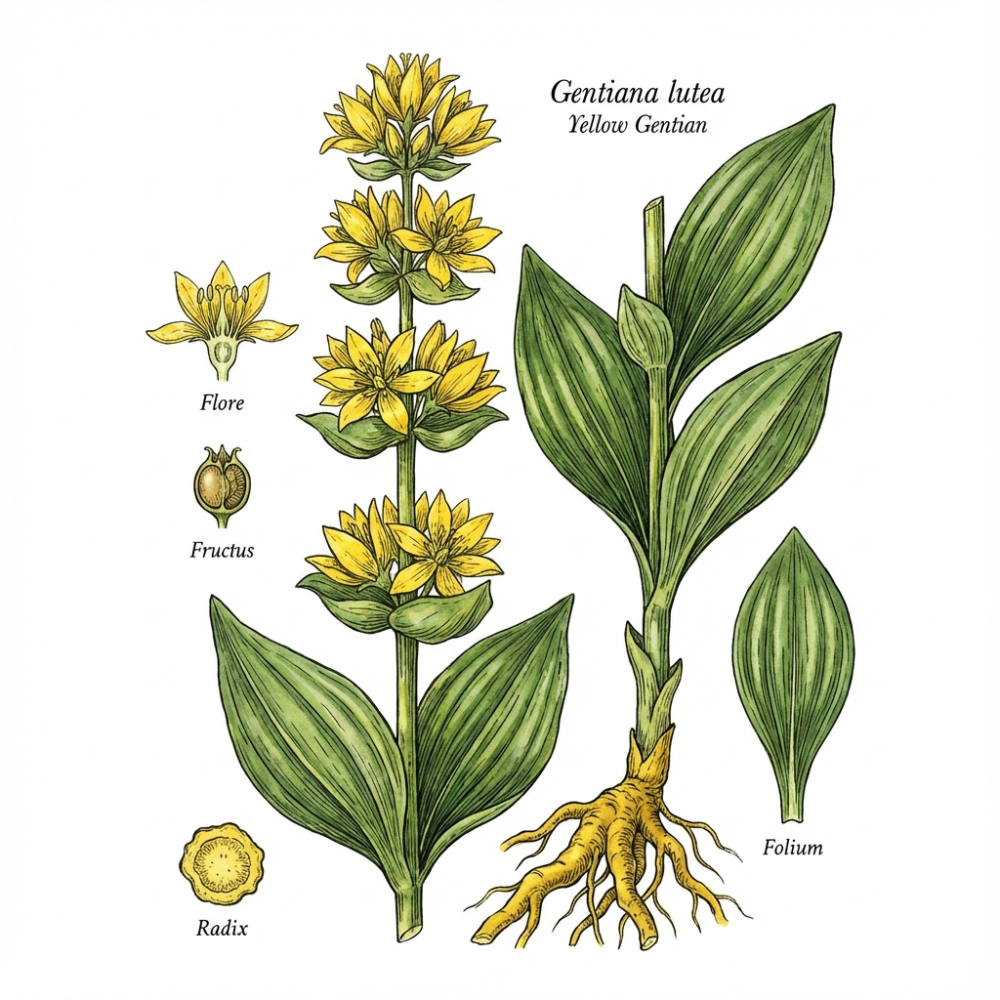

🌼'">
1. Gelber Enzian
Gentiana lutea
🗣️ Lokale Namen: Bitterwurz, Jänzian, Hochwurz
🔍 Erkennung
- Große gelbe Blüten in Quirlen am oberen Stängel
- Große, ovale Blätter mit starken Längsrippen
- Dicke, gelbe Wurzel (sehr bitter!)
- Bis zu 1,5 m hoch
📍 Fundorte in Österreich
Almwiesen, Bergwiesen zwischen 1000-2500m. Tirol, Salzburg, Steiermark, Kärnten.
📅 Sammelzeit
Wurzeln: Herbst (September-Oktober) - nur von älteren Pflanzen!
💊 Heilwirkung
- Verdauungsfördernd - Stärkt Magen und Verdauung
- Appetitanregend - Bei Appetitlosigkeit
- Fiebersenkend - Traditionelles Fiebermittel
📋 Anwendung
Tee: ½ TL getrocknete Wurzel kalt ansetzen (8h), dann kurz erwärmen.
Enzianschnaps: Traditioneller Verdauungsschnaps in den Alpen.
⚠️ Achtung: Streng geschützt! Nicht selbst sammeln. Enzian aus Anbau verwenden.
Verwechslungsgefahr mit giftigem Weißen Germer!